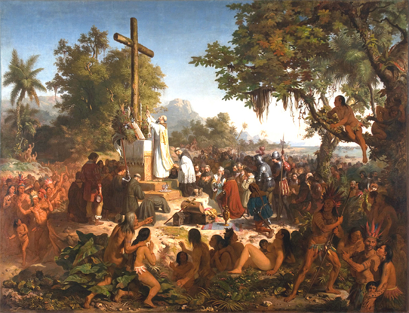
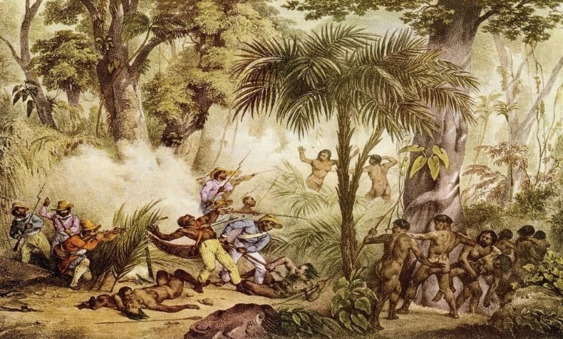

Curiosidades
Origem do Nome Brasil:O nome “Brasil” foi atribuído a essa terra devido à presença de uma árvore da qual se obtinha uma madeira vermelha, semelhante a uma brasa. Essa madeira ficou conhecida como “madeira brasileira”. Piratas franceses também traficavam esse material após a descoberta por Álvares Cabral.
Colonização e Capitanias Hereditárias: A Coroa Portuguesa organizou o novo território em capitanias hereditárias a partir de 1530. A maioria dos colonos era composta por homens, e Portugal enviou órfãos para o Brasil. As mulheres preferiram não ir devido à percepção de perigo na selva. Eventualmente, a presença feminina foi suprida por escravos africanos e indígenas.
Nomes Anteriores: Antes de ser chamado Brasil, o território foi conhecido como Ilha de Vera Cruz e, posteriormente, como Terra de Santa Cruz. Também foi chamado de Terra de Papagaios.
Primeira Missa: A primeira missa no Brasil ocorreu em 26 de abril de 1500.
Recepção pelos Índios: Quando os portugueses chegaram, os índios não os atacaram. Em vez disso, receberam-nos com danças e curiosidade.
Viagem de Cabral: Pedro Álvares Cabral levou mais de um mês para chegar ao Brasil. Ele partiu de Lisboa em 9 de março de 1500 com várias embarcações, mas uma delas com 150 homens nunca mais foi vista após entrar em alto mar.
Primeira Capital: Salvador foi a primeira capital do Brasil, seguida pelo Rio de Janeiro.
Escravos e Escambo: Muitos marinheiros morreram de escorbuto (falta de vitamina C). Além disso, mulheres (muitas vezes taxadas de prostitutas) eram levadas escondidas nos navios.
Moeda: O escambo era a moeda da época. Os portugueses davam bugigangas para os indígenas e, esses, em troca, trabalhava para os portugueses.
Línguas faladas: À época eram faladas cerca de 1.300 línguas indígenas diferentes.

1- Chegada dos Portugueses
Reação dos indígenas Os indígenas reagiram de formas diversas à presença dos colonizadores portugueses e à chegada de invasores, como os holandeses e franceses. Vamos explorar algumas dessas reações: Alianças com os Colonizadores: O apoio indígena foi decisivo para o triunfo da colonização portuguesa. No entanto, as lideranças indígenas tinham seus próprios objetivos ao se aliarem aos portugueses: Guerreiros Temiminós liderados por Arariboia se uniram aos portugueses para derrotar os franceses na baía de Guanabara em 1560, que recebiam apoio dos Tamoios. O chefe Tupiniquim Tibiriçá, valioso para o avanço português na região de São Vicente e no planalto de Piratininga, combatia rivais da própria “nação” Tupiniquim e os “Tapuias” Guaianás, além de escravizar os Carijó para os portugueses. O chefe Potiguar Zorobabé, na Paraíba e Rio Grande do Norte, aliou-se aos franceses no final do século XVI e também aos portugueses. Ele foi recrutado para combater os Aymoré na Bahia e até para reprimir os nascentes quilombos de escravos africanos. O potiguar Felipe Camarão, uma das mais notáveis lideranças indígenas nas guerras pernambucanas contra os holandeses no século XVII, combateu os flamengos, os Tapuias e os próprios “potiguares” que se aliaram aos holandeses. Ele recebeu títulos de nobreza e privilégios da Coroa Portuguesa por sua lealdade. 2- Resistência aos Colonizadores:
Alguns grupos indígenas realizaram ataques frequentes aos núcleos de povoamento portugueses. Os Aymoré, posteriormente chamados de Botocudos, foram um flagelo constante para os colonizadores durante o século XVI na Bahia. Episódios célebres de resistência ou represália incluem: O donatário da Bahia, Francisco Pereira Coutinho, devorado pelos Tupiniquim em 1547. O jesuíta Pero Correa, devorado pelos Carijó nas bandas de São Vicente em 1554. O primeiro bispo do Brasil, D. Pedro Fernandes Sardinha, devorado pelos Caeté após naufragar no litoral nordestino em 1556. Alianças com Invasores contra os Colonizadores: Algumas “nações” indígenas optaram por se aliar aos inimigos dos portugueses:- Os Tamoio, no Rio de Janeiro, foram fortes aliados dos franceses nas guerras das décadas de 1550-60.
- Os Potiguar, em parte, resistiram com os franceses na Paraíba e no atual Rio Grande do Norte. Durante as invasões holandesas em Pernambuco, forneceram auxílio aos flamengos, celebrizando lideranças como Pedro Poti e Antônio Paraupaba.